（已废弃）说明：规则熔断使用指南
规则熔断现已支持在zeus页面配置，具体见规则熔断新文档 说明：规则熔断
一、解决问题
熔断，规则引擎的安全功能之一，主要解决因各种原因导致的 生效 规则 命中Zeus请求量（含拦截、限制支付方式等对业务有干预的决策） 突增，避免对业务造成大规模误伤，命中量突增原因包括以下：
- 风控修改规则配置
- 业务参数名称或值发生变更
- 接口或依赖组件错误
- 其他未知因素导致的命中量突变
二、可支持熔断的能力
|
熔断方式 |
熔断对象 |
熔断维度 |
熔断逻辑 |
是否兜底 |
|---|---|---|---|---|
|
|
|
|
|
说明：
场景：检测场景下的决策波动，熔断对象为引起波动的单条策略(场景+规则+决策)
规则：检测规则的命中的波动，熔断对象为引起波动的多条策略(使用规则的全部场景)
三.使用指南
- 熔断可支持的指标
|
cat实现指标维度（非去重） |
druid实现指标维度（去重） |
|---|---|
|
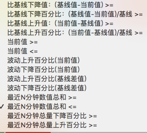 |
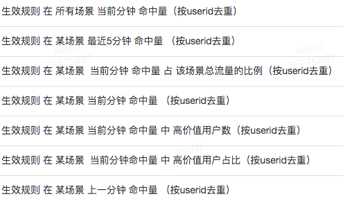 |
2.1 基于CAT的熔断实现
2.1.1 配置熔断逻辑
|
说明 |
示例 |
|---|---|
2.1.1.1 找到所需业务的BusinessKey1）首先进入CAT首页：http://cat.sankuai.com/cat/s/business?op=list 2）Domain输入框中输入：com.sankuai.rc.zeus.worker 3）选择报表展示-业务告警配置 4）BusinessKey是关键部分，命名规范如下
Tips:如何找到自己业务id、决策id呢？ 业务ID：https://zeus.sankuai.com/business_group_mappings/get_list |
|
2.1.1.2 添加告警逻辑1）业务告警配置-右侧告警编辑-新增告警 2）告警名：warning_开头表示这是一条告警逻辑，只报出不熔断； 3）告警对象：次数 4）告警级别：P0、P1、P2…… 5）告警组：大家可以自己配置，向告警组中添加mis号 6）告警方式：大象、邮件、短信、语音可以组合使用 7）夜间模式、降级链接：高端功能，可默认不填 8）剩下的监控可参考链接：http://docs.sankuai.com/doc/arch_dp/cat/alarm/alarm/ |
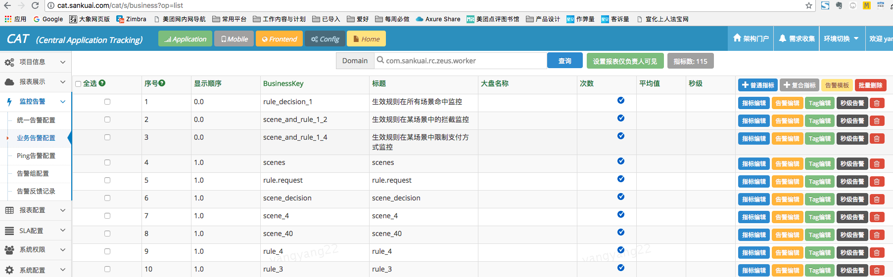 |
2.1.1.3 添加熔断逻辑1）业务告警配置-右侧告警编辑-新增告警 fuse_开头表示这是一条熔断逻辑，触发后规则即被改为标记状态 2）其他与监控逻辑没区别 |
2.1.2 熔断告警逻辑生效
联系Zeus值班号，提供需要生效的告警逻辑
2.1.3 接收熔断告警
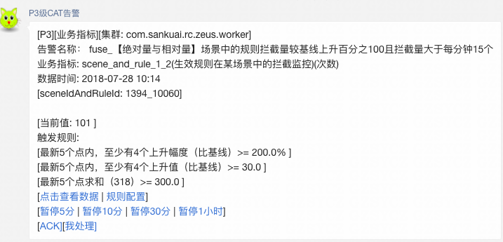
2.1.4 处理熔断告警
|
人工熔断 |
自动熔断与恢复 |
|---|---|
|
将规则1183在场景436一键改为标记 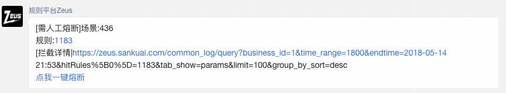 |
将规则10060在场景1394一键改为生效 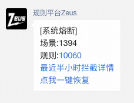 |
2.2 基于druid的熔断实现
对基于CAT熔断满足不了的需求比如：userid去重、高价值用户占比等数据可以通过基于druid的熔断实现。
2.2.1 支持的参数
熔断策略是作为规则配置在业务自建的某个场景中的，当前支持的参数如下，业务可以根据自己的需求使用这些参数直接开发熔断规则
|
参数名 |
类型 |
含义 |
|---|---|---|
|
fuseBusinessId |
整型 |
当前熔断指标所在的业务Id |
|
fuseSceneId |
当前熔断指标监控的场景Id |
|
|
fuseRuleId |
当前熔断指标监控的规则Id |
|
|
fuseDecisionId |
当前熔断指标监控的决策Id |
|
|
distinctUserIdInAllSceneThisMinute |
长整型 |
生效规则 在 所有场景 当前分钟 命中量（按userid去重） |
|
distinctUserIdClassifiedBySceneInLast5Minutes |
长整型 |
生效规则 在 某场景 最近5分钟 命中量 （按userid去重） |
|
distinctUserIdToAllRequestRatioClassifiedBySceneThisMinute |
双精度型 |
生效规则 在 某场景 当前分钟 命中量 占 该场景总流量的比例（按userid去重） |
|
distinctUserIdClassifiedBySceneThisMinute |
长整型 |
生效规则 在 某场景 当前分钟 命中量 （按userid去重） |
|
distinctHighValueUserIdClassifiedBySceneThisMinute |
长整型 |
生效规则 在 某场景 当前分钟 命中量 中 高价值用户数（按userid去重） |
|
distinctHighValueUserIdRatioClassifiedBySceneThisMinute |
双精度型 |
生效规则 在 某场景 当前分钟命中量 中 高价值用户占比（按userid去重） |
|
distinctUserIdClassifiedBySceneLastMinute |
长整型 |
生效规则 在 某场景 上一分钟 命中量 （按userid去重） |
2.2.2 实现方式
熔断服务会每分钟查询一次数据库，对于每个businessId*sceneId*ruleId*decisionId维度，都会计算出一个context，context中包含如上参数列表中的所有参数。我们会把每个维度构造的context参数都过一遍提前配置好的熔断场景，场景中的熔断策略由业务的同事自己编辑，最后根据是命中“人工熔断”还是“自动熔断”进行后续的处理。为了保证安全性暂时只支持“人工熔断”。
2.2.3 使用案例
|
说明 |
示例 |
|---|---|
|
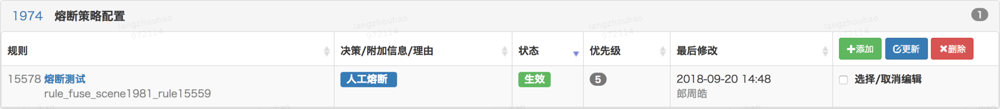 |
|
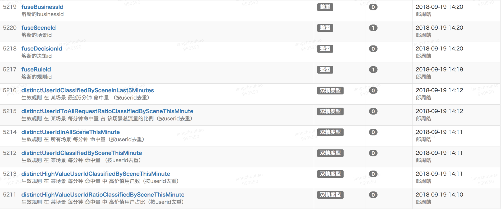 |
|
|
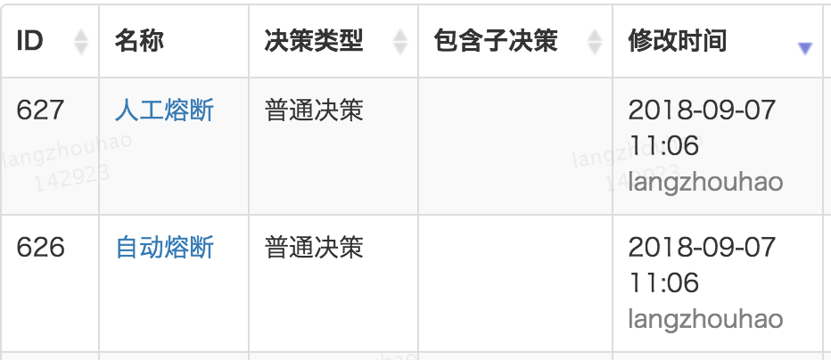 |
|
|
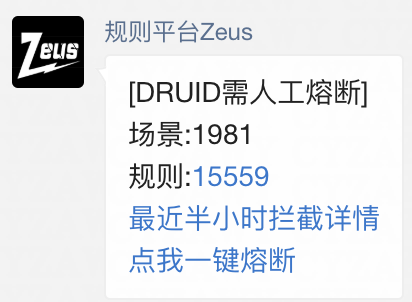 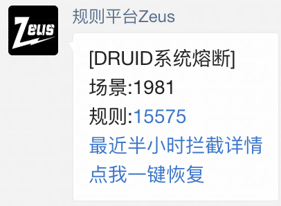 |